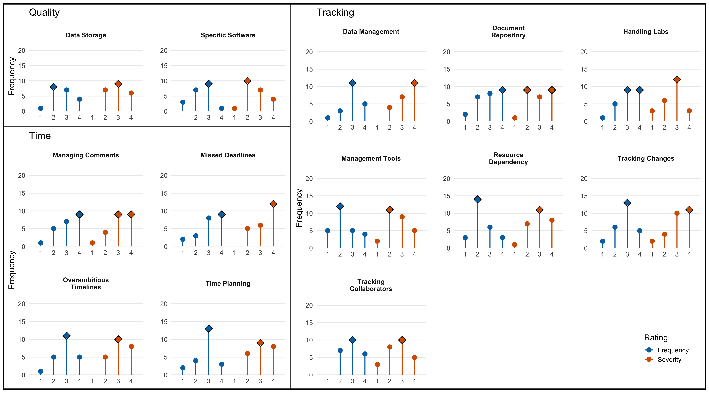

Big Team Science Is More Than Bigger Samples: Lessons from Cognitive Science
Psychological science has spent the last decade grappling with questions of credibility, reproducibility, and generalizability. One of the most important responses to these challenges has been the rise of Big Team Science (BTS)—large-scale collaborative projects that bring together researchers across institutions, countries, languages, and disciplines. A new paper published in Collabra: Psychology, The Advantage of Big Team Science: Lessons Learned from Cognitive Science, reflects on what we’ve learned from organizing and participating in these massive collaborations and offers practical guidance for future projects.
Why Big Team Science?
Big Team Science emerged in response to a simple realization: many scientific questions are too large and too important for any single lab to answer alone. Large collaborations have transformed psychology by:
- Increasing statistical power through larger samples
- Improving replicability through coordinated research designs
- Expanding cultural diversity in participant pools
- Testing whether findings generalize across countries and contexts
- Bringing together expertise from multiple disciplines
Projects such as ManyBabies, the Psychological Science Accelerator, Many Labs, and numerous other collaborative initiatives have demonstrated that collective scientific effort can answer questions that would be difficult—or impossible—for individual laboratories. But bigger teams also create bigger challenges.
Learning from Experience
Rather than relying solely on theory, our paper draws on the collective experiences of leaders and coordinators from numerous Big Team Science projects. Through collaborative hackathons and surveys of experienced BTS managers, we identified dozens of recurring challenges and grouped them into three broad categories:
- Diversity Challenges
- Volunteering Challenges
- Capacity Challenges
These categories capture many of the realities of managing projects that may involve hundreds of researchers spread across dozens of countries.
Diversity: The Strength and Challenge of Global Science
One of the greatest advantages of Big Team Science is diversity. Researchers bring different cultural perspectives, languages, methodological traditions, and forms of expertise. That diversity also introduces complexity. Some of the most common challenges include:
- Navigating different ethics review systems
- Adapting materials across languages and cultures
- Coordinating across time zones
- Managing communication among researchers with different disciplinary assumptions
- Securing funding across multiple countries and institutions
The paper argues that successful projects must treat these issues as core design considerations rather than logistical afterthoughts. For example, translation is not simply a technical task. It requires careful coordination, validation, and recognition of the people who perform this work. Likewise, ethics approval processes can vary dramatically across institutions and countries, making early planning essential.
Volunteers Make Big Team Science Possible
Most Big Team Science projects rely heavily on volunteer labor. Researchers contribute because they believe in the scientific goals, want to be part of a larger community, and see value in collective discovery. Yet volunteer-driven projects face unique risks. One recurring challenge identified in the paper is diffusion of responsibility. When many people are involved, it becomes easy for individuals to assume someone else will handle a task. The solution is not greater centralization. Instead, successful projects create:
- Clearly defined roles
- Transparent decision-making structures
- Explicit expectations
- Fair systems for recognizing contributions
In other words, large collaborations work best when responsibility is distributed—but never ambiguous. The paper also emphasizes the importance of planning for leadership transitions. Many projects span several years, and teams must be prepared for changes in personnel, funding, and institutional support.
Human Limits Matter
Scientific collaboration is ultimately a human endeavor. As projects grow, so does the volume of information that must be tracked:
- Documents
- Data files
- Ethics approvals
- Translation workflows
- Contributor records
- Meeting notes
- Analysis plans
Many of the challenges reported by experienced BTS leaders were not scientific problems at all. They were organizational problems. Missed deadlines, tracking changes, maintaining version control, and coordinating communication all emerged as major obstacles. This is one reason why research infrastructure and project management tools are becoming increasingly important for modern science. Effective collaboration requires systems that help researchers keep track of complex workflows while maintaining transparency and reproducibility.
The Future of Big Team Science
Perhaps the most important message from the paper is that Big Team Science is not simply about conducting larger studies. The goal is not merely to recruit more participants or produce bigger datasets. The goal is to harness the collective expertise of diverse researchers working together toward shared scientific questions.
That requires new approaches to leadership, communication, infrastructure, and collaboration. As science becomes increasingly global and interdisciplinary, these skills will become just as important as methodological expertise. The future of research may not belong to the lone genius working in isolation. It may belong to communities of researchers who learn how to work together effectively at scale. And if the lessons from Big Team Science teach us anything, it is that collaboration itself is becoming one of the most important scientific tools we have.
Reference
Vaidis, D., Miranda, J., Buchanan, E. M., Yang, Y. F., Kowal, M., Schmidt, K., Topor, M., Misiak, M., Miller, R., Protzko, J., Gjoneska, B., Miller, J., Exner, A., Azevedo, F., Paruzel-Czachura, M., Mushtaq, F., Oliveira, C. M., Wagge, J., De Moor, D., … Pronizius, E. (2025). The Advantage of Big Team Science: Lessons Learned from Cognitive Science. Collabra: Psychology.
Also please be proud of this damned lollipop picture that took me forever to make and the journal made me do it like 5 times over.
